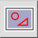

Kijelölés téglalap alakú területtel
Eszköztár / ikon:


Menü: Kijelölés > Kijelölés téglalap alakú területtel
Rövidítések: T, R | T, W
Parancsok: selectrectangle | selectwindow | tr | tw
Eszköztár / ikon:


Kijelöli az összes olyan elemet, amely egy adott téglalap alakú területen belül van.